|
|
HELP FIND THE FOLLOWING CEMETERY LOCATIONS
PAGE 59
THE
AVENGERS: The Murder Market (Peter Graham Scott: December 1964)
John Steed (Patrick Macnee) and Lovejoy (Patrick Cargill) and his staff
attend
the 'funeral' of Mrs. Peel. Robert Stone (John Woodvine) is seen
watching the
events from a distance.
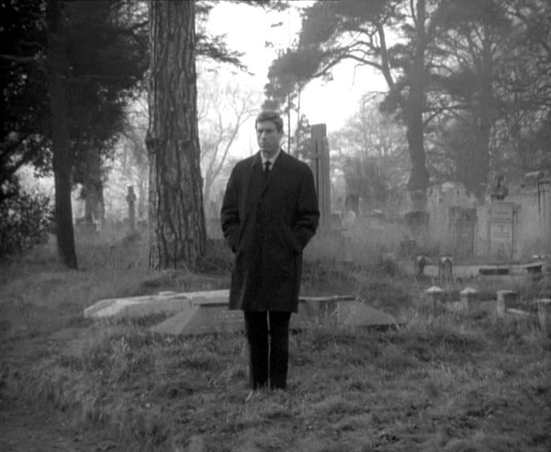
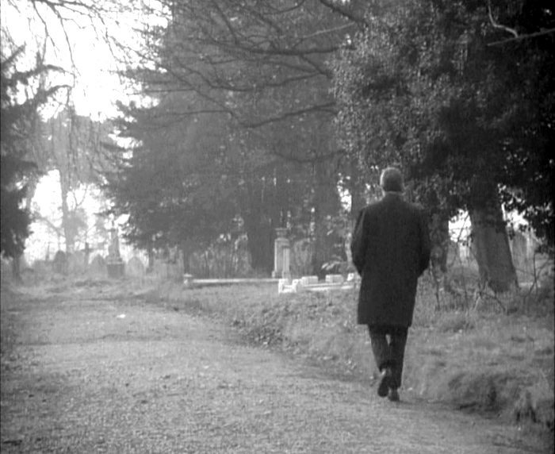
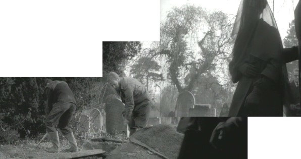
THE SAINT: Legacy for the Saint (Roy Ward Baker: Spring 1968)
Hampstead Cemetery, Fortune Green
Road, NW6 -

THE ADVENTURER: Skeleton in the
Cupboard
(Cyril Frankel)
Hampstead Cemetery, Fortune Green Road, NW6: Stock footage of
cemetery.
(Idenified by Michael
Richardson, November 2023)
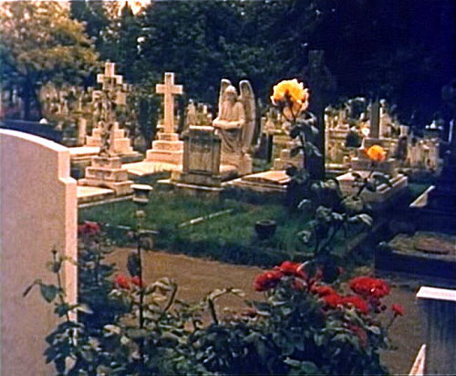
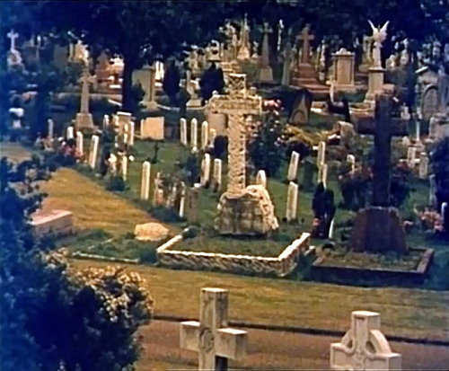
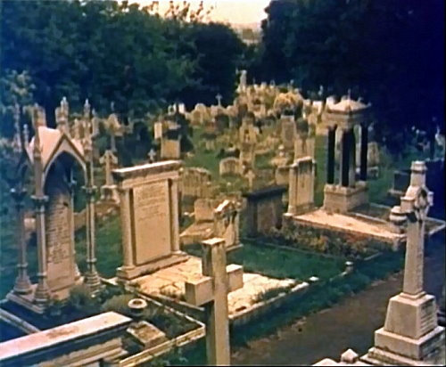
Hendon Cemetery
and Crematorium, Holders Hill Rd, London NW7: The funeral of Professor
John
Ballard. Karen Ballard (Sylvia Simms) is supported by Sir Richard
McKenzie (Richard
Vernon), Master of the College, and Gene Bradley (Gene
Barry) who
was to investigate Ballard’s misappropriation of funds.
Identified by Andrew Chilcott, July 2016
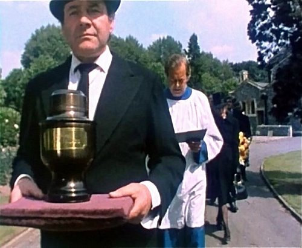
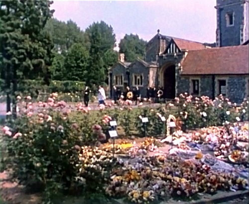

DEPARTMENT
S: The Ghost of Mary
Burnham (Cyril
Frankel: ??)
Hampstead Cemetery, Fortune Green
Road, NW6 - Mary Burnham is buried here.
(Idenified by Michael Richardson, November 2023)

THE
SAINT: The Paper Chase (Leslie Norman: November 1966)
Eric Redman and Hanya
Lintz
visit
the grave of Professor Rodman.
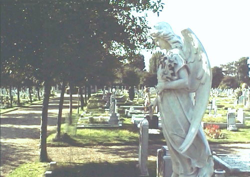
GIDEON’S
WAY: The Firebug (Roy Baker: September 1964)
The
funeral of
Constable Jarvis, Bishop () and Gideon () are both present.

THE ADVENTURER: Mr Calloway is a Very Cautious Man
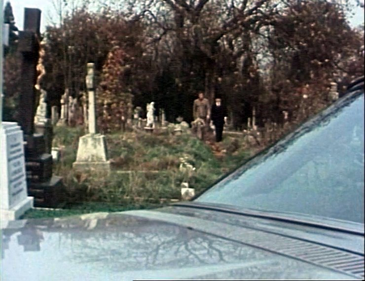

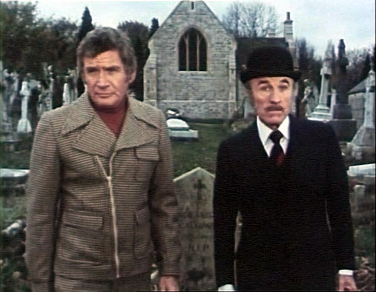
THE ADVENTURER: The Case of the Poisoned Pawn
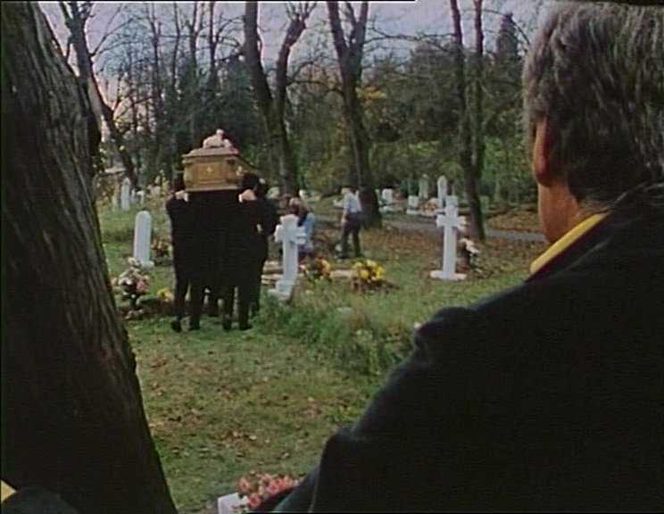
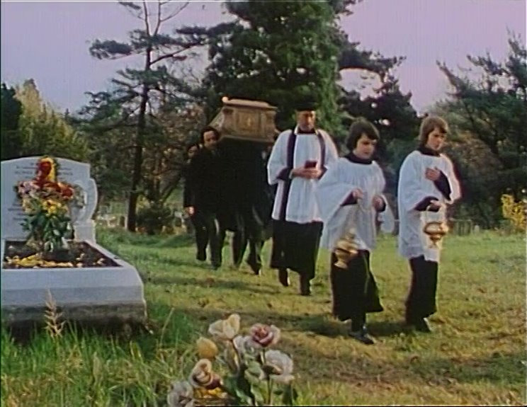
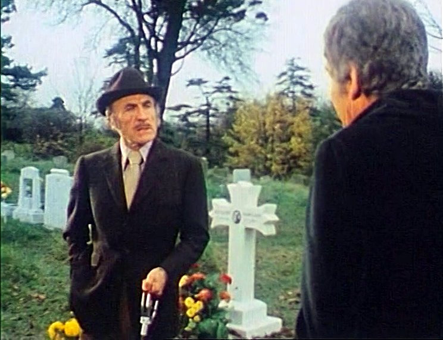
GIDEON’S
WAY:
Big Fish, Little Fish (Cyril
Frankel: October 1964)
It’s
Sunday and
after church Commander Gideon relaxes with his family.

Think you know a spot? Need a bigger image? Email me.
< Previous | Index | Avengerland | Next >
Copyright © 2023 Anthony R. McKay